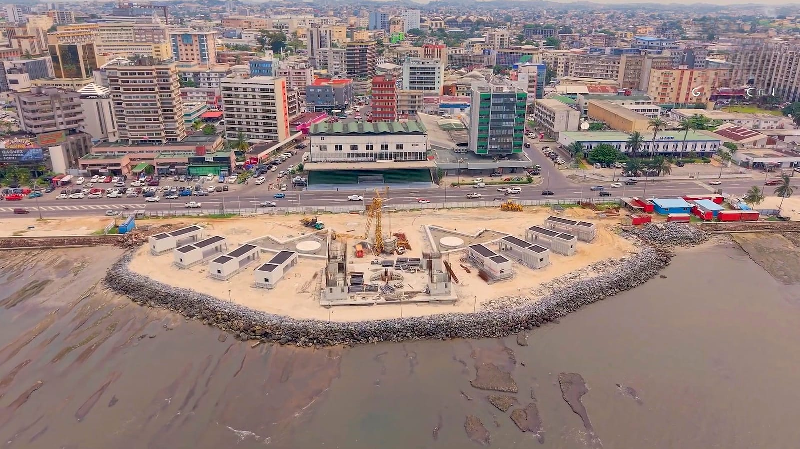
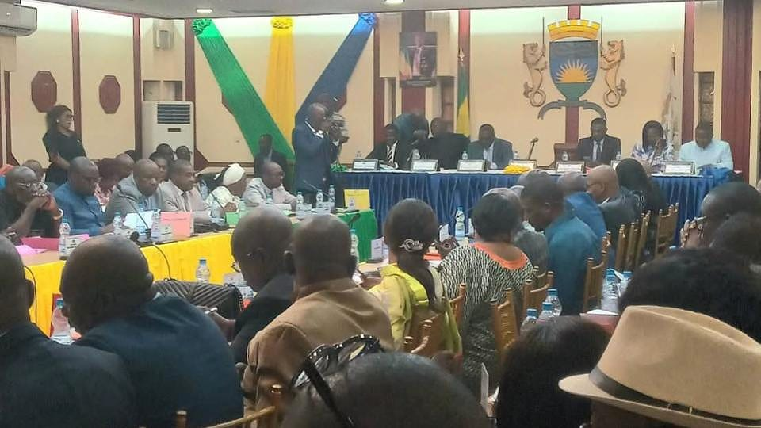
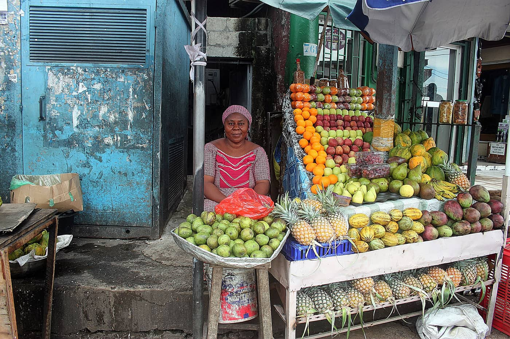

Accueil › La Mairie
La commune de LibrevilleLa Mairie de Libreville administre la capitale politique et administrative du Gabon. Avec les six mairies d'arrondissement, elle assure l'état civil, l'urbanisme, la propreté et les services de proximité.
Banquier de formation (BIPG, UGB), ancien maire du 2e arrondissement de 2008 à 2013, Eugène Mba avait déjà été élu maire de Libreville en décembre 2020. Il retrouve l'hôtel de ville le 23 avril 2026, élu à l'unanimité par le conseil municipal, puis installé le lendemain.
Un adjoint est spécialement chargé de la digitalisation : le signe d'une mairie qui fait du numérique sa ligne de conduite.
Délégations des adjoints à compléter avec l'arrêté officiel du maire.
Le conseil municipal vote le budget ; le maire et ses adjoints dirigent l'administration ; six mairies d'arrondissement assurent la proximité.
Organigramme simplifié, à compléter avec l'organigramme officiel des services.
Fondée en 1849 sur la rive droite de l'estuaire du Gabon, Libreville est la capitale politique et administrative du pays et le chef-lieu de la province de l'Estuaire. Elle accueille la Présidence, la Primature, le Parlement et la plupart des institutions.


e-Tax, état civil numérique, vignettes QR, MADIGIPAIE : la mairie a ouvert plusieurs chantiers numériques. Le portail les relie en une seule porte d'entrée pour l'habitant et un seul back-office pour les agents.
De mi-janvier à mi-juin 2026, selon la mairie.
Lancées le 28 mai 2026 avec Moov Africa Gabon Télécom.
Pilote au marché de Mont-Bouët depuis le 12 juin 2026.
Sources : Gabonclic (juin 2026), Gabonreview (mai 2026), Gabonactu (juillet 2026).